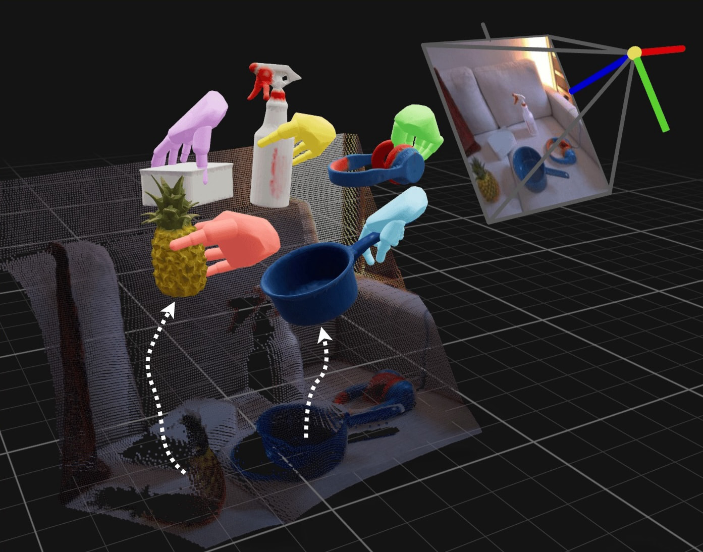

Human Universal Grasping
HUG in the wild. 30 objects with 10 uncut rollouts each, reaching 62.0% success in an unseen home with unseen objects. Success is counted as passing the object to the human. Sped up 2x.
Abstract
Humans can grasp objects effortlessly, whereas multi-fingered robots are far from this level of generality. We argue that the most natural source of robot grasping data is from humans, who pick up thousands of objects every day. We present HUG, a flow-matching model that generates diverse human grasps for any user-specified objects in a single RGBD image captured from a stereo camera. Using smart glasses, we first collect 1M-HUGs, an egocentric dataset of human grasps spanning 1M frames (27.8 hrs) and 6,707 object instances across 41 buildings. Next, to model the distribution of natural human grasps, our novel flow-matching model fuses RGB and depth observations to output a grasp parameterized by wrist translation, wrist rotation, and MANO hand pose. Predicted grasps can be retargeted to various robot hands, enabling zero-shot grasping in everyday scenes. To standardize evaluation, we build a new simulated benchmark, HUG-Bench, of 90 unseen objects from five geometric categories and various sizes, with metric-scale 3D meshes. We evaluate HUG in the real world on the 30-object test set of HUG-Bench across multiple stereo cameras, robot embodiments, and household environments. HUG outperforms the state-of-the-art grasping baselines by +23% and +34% on our challenging object set. Code, data, benchmark, checkpoints, and an interactive demo are released on our website.
Contributions
- To our knowledge, HUG is the first grasping framework trained purely on human data and deployable across multiple robot embodiments.
- Dataset. 1M-HUGs, 1M egocentric image-grasp pairs of natural human grasps across 6.7K recordings and 41 buildings, with MANO-fit hand poses and metric depth.
- Method. HUG, a point-conditioned flow-matching model that predicts MANO grasps from RGB-D and retargets to multiple embodiments without per-hand training.
- Benchmark. HUG-Bench, 90 unseen objects with metric-scale 3D meshes for paired simulation and real-world evaluation.
The 1M-HUGs Dataset

1M-HUGs dataset. Our training dataset comprises 1M egocentric frames of natural human grasps, spanning 6,707 object instances. Each entry provides synchronized RGB and stereo grayscale views, metric depth, an object mask, and an optimized MANO hand pose with wrist transformation in the camera frame.
HUG Architecture

HUG architecture. Conditioned on an RGB-D image and a click on the target object, HUG predicts MANO hand grasps via a flow-matching transformer over fused RGB and point cloud features. Predicted human grasps are then retargeted zero-shot to downstream robot hands.
HUG-Bench


HUG-Bench. 90 unseen everyday objects spanning five geometric categories and three size bins, each reconstructed into a metric-scale 3D mesh for paired evaluation in simulation and the real world. Left: the 30-object test split with real objects (top) and their simulation assets (bottom). Right: real-to-sim grasping, evaluating HUG on HUG-Bench in simulation using real captured inputs.
Basline Comparisons
Overall success rate: CAP 32.7% · Dex1B 43.7% · HUG 66.7%
Pick a HUG-Bench test object to compare methods side by side. Each clip plays 10 rollouts consecutively. Success is counted as lifting the object off the table. Sped up 2x.
Note on Dex1B. Dex1B runs open-loop and can plan trajectories that collide with the table. Severe table collisions are aborted to protect the hardware and counted as failures, with the colliding trajectory shown in the right panel. Collisions that eject the hand from the safety mount are also counted as failures.
Real-World Failure Modes

Failure-mode breakdown. Grasp-outcome flow for the 300 HUG-Bench test trials in each real-world setting, tracing every attempt through the pre-grasp, grasp, and lift stages into success or a specific failure. Left: tabletop (66.7% success). Right: in-the-wild (62.0% success). The dominant cause of failures is the absence of motion planning in our minimal open-loop setup. With force-aware grasping, we also expect to see fewer failures due to to object slippage in the lift stage.
BibTeX
@article{anonymous,
title={Human Universal Grasping},
author={Anonymous},
journal={Under double-blind review},
year={2026}
}